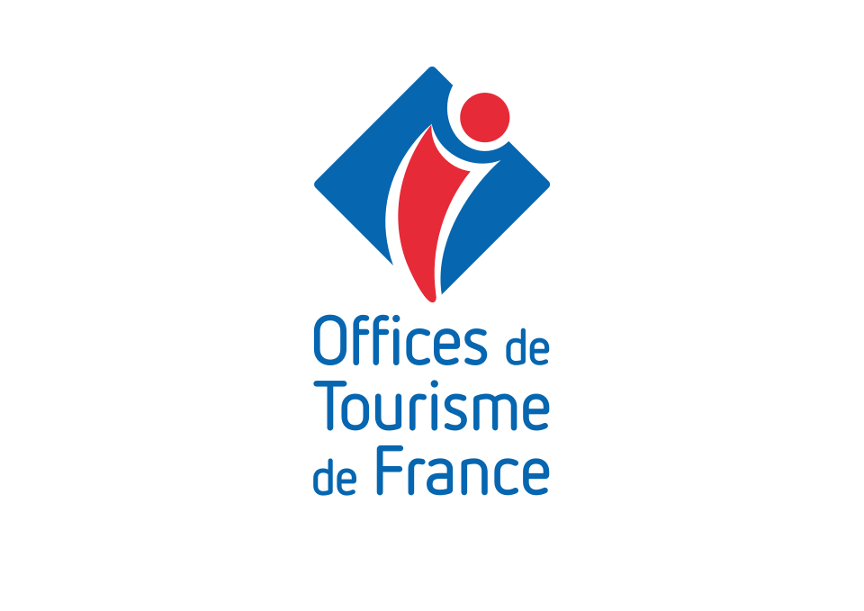

| N° | Département | Site | Visiteurs |
|---|---|---|---|
| 1 | Ain | 0 | |
| 2 | Aisne | 0 | |
| 2A | Corse-du-Sud | Réserve naturelle de Scandola | 200 |
| 2B | Haute-Corse | Îles Lavezzi | 350 |
| 3 | Allier | 0 | |
| 4 | Alpes-de-Haute-Provence | Citadelle de Sisteron | 180 |
| 5 | Hautes-Alpes | Parc national des Écrins | 950 |
| 6 | Alpes-Maritimes | Musée Matisse | 300 |
| 7 | Ardeche | Palais idéal du facteur Cheval | 150 |
| 8 | Ardennes | Place Ducale de Charleville-Mézières | 200 |
| 9 | Ariege | Château de Foix | 120 |
| 10 | Aube | Lac du Der-Chantecoat | 500 |
| 11 | Aude | Cité de Carcassonne | 2000 |
| 11 | Aude | Parc naturel régional de la Narbonnaise | 800 |
| 12 | Aveyron | Cathédrale Saint-Jean | 250 |
| 12 | Aveyron | Viaduc de Millau | 400 |
| 13 | Bouches-du-Rhone | Calanques de Marseille | 3500 |
| 13 | Bouches-du-Rhone | Pont d'Avignon | 400 |
| 14 | Calvados | Plages du Débarquement | 4500 |
| 15 | Cantal | Puy Mary | 600 |
| 16 | Charente | Cognac - Maisons de cognac | 350 |
| 17 | Charente-Maritime | Fort Boyard | 180 |
| 18 | Cher | Cathédrale de Bourges | 300 |
| 19 | Correze | Gouffre de Padirac | 450 |
| 20 | Corse-du-Sud | 0 | |
| 21 | Haute-Corse | Château de Fougères | 200 |
| 22 | Cote-d'Or | Côte de Granit Rose | 1500 |
| 23 | Cotes-d'Armor | Tapisseries d'Aubusson | 80 |
| 24 | Creuse | Grotte de Lascaux IV | 400 |
| 25 | Dordogne | Citadelle de Besançon | 280 |
| 26 | Doubs | Palais idéal du facteur Cheval | 150 |
| 27 | Drome | Abbaye du Mont-Saint-Michel | 350 |
| 28 | Eure | Cathédrale de Chartres | 1500 |
| 29 | Eure-et-Loir | Pointe du Raz | 1200 |
| 30 | Finistere | Pont du Gard | 1400 |
| 31 | Gard | Basilique Saint-Sernin | 800 |
| 32 | Haute-Garonne | Sanctuaire de Lourdes | 6000 |
| 33 | Gers | Dune du Pilat | 2100 |
| 34 | Gironde | Grotte de Clamouse | 200 |
| 35 | Herault | Saint-Malo intra-muros | 3000 |
| 36 | Ille-et-Vilaine | 0 | |
| 37 | Indre | Château de Chenonceau | 850 |
| 38 | Indre-et-Loire | Grande Mosquée de Lyon | 400 |
| 39 | Isere | Parc naturel du Haut-Jura | 600 |
| 40 | Jura | Dune du Pilat - Plages | 1800 |
| 41 | Landes | Château de Chambord | 1000 |
| 42 | Loir-et-Cher | Basilique Notre-Dame de Fourvière | 2500 |
| 43 | Loire | Le Puy-en-Velay | 400 |
| 44 | Haute-Loire | Machines de l'île | 650 |
| 45 | Loire-Atlantique | Cathédrale Sainte-Croix d'Orléans | 300 |
| 46 | Loiret | Parc naturel des Causses du Quercy | 350 |
| 47 | Lot | Agen et sa région | 180 |
| 48 | Lot-et-Garonne | Gorges du Tarn | 800 |
| 49 | Lozere | 0 | |
| 50 | Maine-et-Loire | Mont-Saint-Michel | 3000 |
| 51 | Manche | Cathédrale de Reims | 1500 |
| 52 | Marne | Lac du Der | 500 |
| 53 | Haute-Marne | Basilique d'Évron | 120 |
| 54 | Mayenne | Place Stanislas | 4000 |
| 55 | Meurthe-et-Moselle | Verdun - Champs de bataille | 800 |
| 56 | Meuse | Golfe du Morbihan | 2500 |
| 57 | Morbihan | Cathédrale de Metz | 600 |
| 58 | Moselle | Parc du Morvan | 450 |
| 59 | Nievre | Vieux-Lille | 5000 |
| 60 | Nord | Parc Astérix | 2300 |
| 61 | Oise | Basilique Sainte-Thérèse | 400 |
| 62 | Orne | Notre-Dame-de-Lorette | 300 |
| 63 | Pas-de-Calais | Vulcania | 450 |
| 64 | Puy-de-Dome | Grottes de Bétharram | 180 |
| 65 | Pyrenees-Atlantiques | Parc national des Pyrénées | 850 |
| 66 | Hautes-Pyrenees | Palais des rois de Majorque | 200 |
| 67 | Pyrenees-Orientales | Cathédrale de Strasbourg | 4500 |
| 68 | Bas-Rhin | Écomusée d'Alsace | 250 |
| 69 | Haut-Rhin | Basilique de Fourvière | 2500 |
| 70 | Rhone | Chapelle de Ronchamp | 100 |
| 71 | Haute-Saone | Abbaye de Cluny | 200 |
| 72 | Saone-et-Loire | Circuit des 24 Heures du Mans | 500 |
| 73 | Sarthe | Lac du Bourget | 1200 |
| 74 | Savoie | Lac d'Annecy | 3000 |
| 75 | Haute-Savoie | Cathédrale Notre-Dame de Paris | 12000 |
| 76 | Paris | 0 | |
| 77 | Seine-Maritime | Disneyland Paris | 15000 |
| 78 | Seine-et-Marne | Château de Versailles | 8100 |
| 79 | Yvelines | Marais Poitevin | 900 |
| 80 | Deux-Sevres | Baie de Somme | 2000 |
| 81 | Somme | Albi - Cité épiscopale | 500 |
| 82 | Tarn | Abbaye de Moissac | 180 |
| 83 | Tarn-et-Garonne | Port de Saint-Tropez | 4000 |
| 84 | Var | Palais des Papes | 650 |
| 85 | Vaucluse | Puy du Fou | 2300 |
| 86 | Vendee | Futuroscope | 1900 |
| 87 | Vienne | Oradour-sur-Glane | 300 |
| 88 | Haute-Vienne | Place Stanislas | 350 |
| 89 | Vosges | Abbaye de Pontigny | 80 |
| 90 | Yonne | Lion de Belfort | 200 |
| 91 | Territoire de Belfort | Château de Fontainebleau | 500 |
| 92 | Essonne | La Défense | 1500 |
| 93 | Hauts-de-Seine | Basilique Saint-Denis | 150 |
| 94 | Seine-Saint-Denis | Château de Vincennes | 200 |
| 95 | Val-de-Marne | 0 |